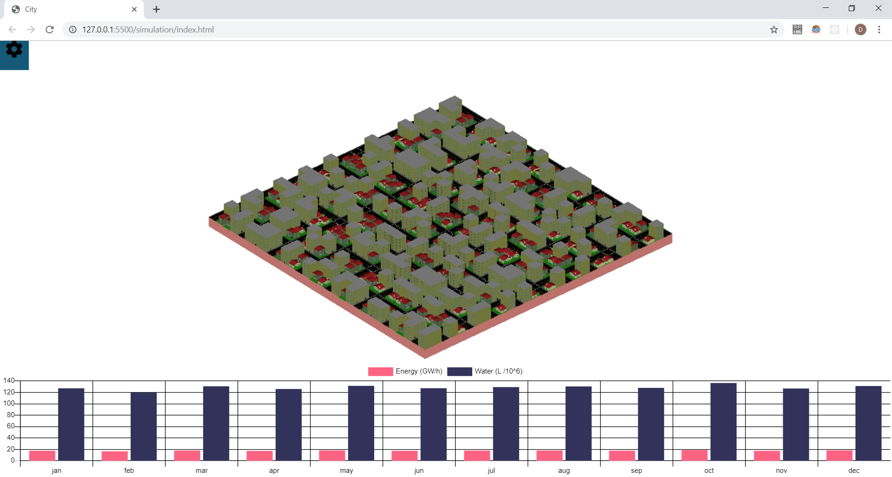
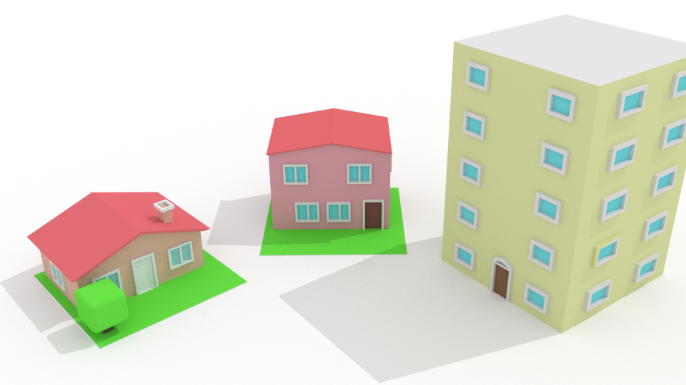
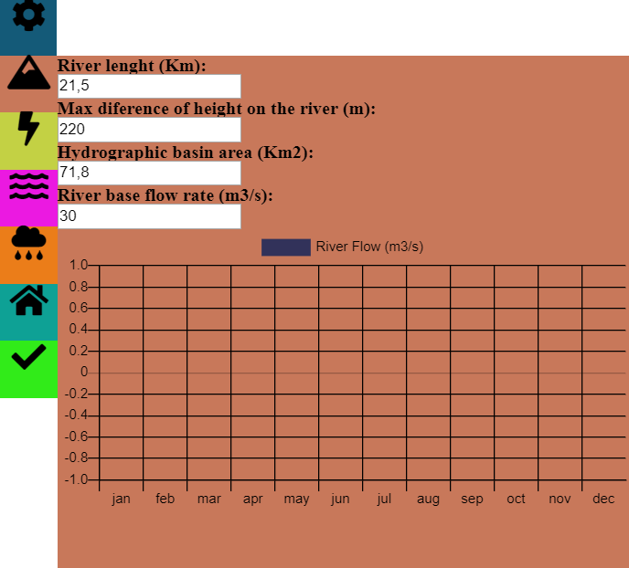

City Resources
City Resources is a project made for a Statistics and Probability class.

The City
This project generates a random city with 3 types of buildings,
each building has its own random number and type of household goods and each household item have a predefined
consume of energy and/or water wich is used to calculate the total of energy and water consumed in a day. Example:
The code generated a house type 1:
- House 1:
- N° of Residents: 3
- Household items:
- Shower
- energy: In a 15 min shower it uses N (kW/h) * N of residents * Frequency
- water: In a 15 min shower it uses N (L) * N of residents * Frequency
- Dish washer:
- energy: N (kW/h) per cycle
- water: N (L) per cycle
- Shower
- ...
After a house is generated, the code also randomizes a usage of each household item, for example, if there is 3 residents,
they will use the shower at least 3 times a day (1 shower per person), but they can use it more times,
with that we can simulate how much energy and water this house will consume in a day, month, or year. After generating the frequency of use for each house,
we simulate a year and sum the data from all the houses and display it in a chart.

There are three types if buildings, a 1 floor house, a 2 floor house and a 5 floor building(Wich has 4 apartments per floor + the entrance, in total 16 apartments)

The Resources
The resources are produced and consumed by the city
The water is produced by demand and the energy is generated by the flow of a river.
Water
The water comes from two sources, a river and the rain. The river has a flow rate, default 30 m3/s,
that is affected by the rain regime,if is raining a lot, the flow rise accordingly to surface runoff of the drainage basin (Yeah, the river is the main river of a basin, where all the rain drains)
The menu where you edit the river and see it's mean flow rate per month.
The runoff calculations
The method used is the Soil Conservation Service (SCS) (Triangular Unit Hydrogram) .
"The Soil Conservation Service proposed the development of a synthetic unit hydrograph from
an admission, requiring only the determination of the peak flow and the time in which it
occurs".[1]
Concentration time (ct)
It is the time interval counted from the beginning of the precipitation so that the whole basin
shall contribute to the study section. Corresponds to the duration of the trajectory
of the particle of water that takes longer to reach the section.
`ct = 57*(L^3/H)^0.385`
Where L = The lenght of the river
and
H = The area of de drainage basin